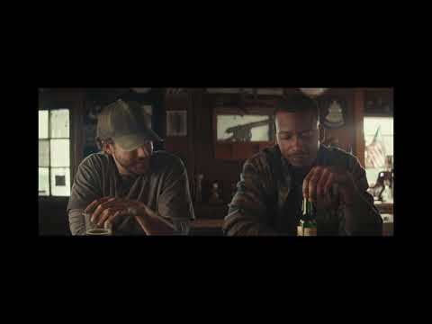

案例发生了什么

74 位来自不同年龄、性别和生活场景的英国人依次用头把球传下去，每个人球衣上的一个词对应歌曲歌词，最终拼成一支可以“看着唱”的世界杯助威片。
先以 74 人连续头球影片建立主张；每件球衣用单词充当动态歌词；电视和网络视频扩散；开赛前向英格兰家庭大规模派发世界杯特别版。
MARKETING KNOWLEDGE ROUTER · 营销知识路由器
营销启发卡
把历届经典的记忆点、商业结构和迁移方法放在同一层阅读。 卡片底部按主题连接全站相关案例、经典方法与深度文章。
核心动作
全民参与、普通人接力完成不可能任务，以及“输赢之外也要踢得让人骄傲”的温和国家情绪；足球连续经过 74 个人的头顶，歌词一个词一个词出现在球衣背后。
传播与商业机制
报纸的能力是把分散个体组织成公共叙事；74 个词像一条会移动的头版标题，而大规模免费报纸发行把影片主张送进家庭；先以 74 人连续头球影片建立主张；每件球衣用单词充当动态歌词；电视和网络视频扩散；开赛前向英格兰家庭大规模派发世界杯特别版。
可复用的方法
全民助威不一定依赖球星；把一句主张拆成很多人都能完成的小动作，再用剪辑连接，能让“国家情绪”拥有真实的人群面孔。
适用条件、风险与证据
- 大规模拍摄和发行成本较高；民族情绪表达要避免排他与过度承诺，创意也必须能在没有好赛果时成立。
- 大规模拍摄和发行成本较高；民族情绪表达要避免排他与过度承诺，创意也必须能在没有好赛果时成立。 后续复盘还应补齐发布主体、时间线、真实执行图、媒介范围和结果口径；没有这些证据时，不把行业评价或赛事总热度写成品牌增量。
资料与来源
官方资料与原始来源
市场 / 权益
英国
非官方国家队助威
创意打法
一镜到底感；群众接力型；媒体发行型
- The Drum · 2014-05-29The Sun urges England to Do Us Proud
- The Drum · 2014-06-11Keepy-uppy karaoke campaign review
- YouTube · 2014本页真实案例图片主源
- YouTube · 2014本页真实案例图片主源
来源按品牌/官方发布、官方账号留存、权威媒体、获奖案例库分层记录；品牌与奖项自报结果不视作独立审计。